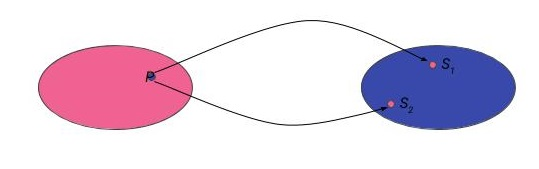

02 - Gli Algoritmi
Formulare un problema¶
Per comprendere gli algoritmi, partiamo definendo il concetto di problema.
In tal senso, il dizionario De Mauro - Paravia ci viene in aiuto definendolo come:
Definizione di problema
...quesito da risolvere mediante la determinazione di uno o più enti, partendo da elementi noti e condizioni fissate in precedenza.
Questa definizione ci dà gli elementi necessari alla formulazione compiuta di un problema. Analizziamoli più nel dettaglio.
Il problema come compito¶
Un problema è dunque in primis un quesito (o, analogamente, un compito) che necessita di una risoluzione (o svolgimento). Esempi concreti di problema sono:
- "Come montare il mobile che abbiamo appena acquistato dall'IKEA?"
- "Come calcolare l'ipotenusa di un triangolo rettangolo?"
- "Come dimostrare l'ipotesi di Riemann?"
Possiamo vedere che i problemi possono essere di ogni tipo e difficoltà; sono tutti accomunati però dal fatto che, qualora siano risolvibili, per farlo è necessario adoperare un algoritmo.
L'ente risolutore¶
La risoluzione del problema è delegata ad un o più enti, propriamente intesi come esecutori di una serie di step necessari a risolvere il problema.
Rimanendo agli esempi precedenti, il risolutore del primo problema è il montatore del mobile; quello per il secondo è lo studente che calcola l'area del triangolo mediante il teorema di Pitagora; nel terzo caso invece abbiamo il matematico teorico, che dimostra (o confuta) l'ipotesi di Riemann.
Gli elementi noti e le condizioni fissate¶
La risoluzione del problema non può prescindere dalla conoscenza degli elementi noti e delle condizioni fissate per lo stesso. Intuitivamente, questo significa conoscere lo stato del mondo a partire dal quale dovremo risolvere il problema.
Torniamo ai nostri esempi.
In primis, per montare il mobile IKEA, avremo bisogno della conoscenza di dettagli quali:
- collocazione desiderata del mobile;
- numero e tipo di pezzi nella confezione del mobile;
- attrezzi di cui abbiamo bisogno.
Oltre questo, potrebbero esserci alcune condizioni da rispettare, come ad esempio cercare (invano) di montare il mobile prima che tramonti il sole, o il provare a non rompere nulla.
Analogamente, per calcolare l'area di un triangolo rettangolo, dovremo conoscerne base ed altezza, e rispettare i vincoli imposti dalla geometria di base.
Nota
La determinazione degli elementi noti e delle condizioni fissate per la dimostrazione dell'ipotesi di Riemann è lasciata come banale esercizio al lettore.
Risolvere un problema¶
La formulazione di un problema implica quindi la determinazione del cosa (il quesito da risolvere), del chi (l'esecutore materiale della risoluzione) e del da dove (lo stato di partenza e le condizioni fissate). In particolare, diamo a questi ultimi il nome di dati: i dati caratterizzano, anche parzialmente, lo stato iniziale del mondo, e possono essere forniti in un linguaggio naturale che permetta di descrivere delle situazioni, o stati, e le differenze tra di essi.
Problemi e soluzioni¶
Il lettore più attento noterà che manca ancora un elemento fondamentale, ovvero il come. Questo è definito individuando un apposito metodo di risoluzione o, più semplicemente, una soluzione al problema.
Dal punto di vista formale, l'individuazione del metodo di risoluzione può essere espressa come una relazione univoca che associa ad ogni elemento dello spazio dei problemi (o meglio, delle classi di problemi, come sarà più chiaro in seguito) \(\mathbb{P}\) uno o più elementi dello spazio delle soluzioni \(\mathbb{S}\). Questo è rappresentato dal seguente diagramma di Eulero-Venn:

Informalmente, possiamo dire che per ogni problema (se risolvibile) esiste almeno una soluzione.
Costruire la soluzione¶
Il compito del risolutore è quindi quello di "costruire", o "individuare", la soluzione. La possibilità di farlo è legata ad alcune condizioni fondamentali, ovvero:
- le operazioni atomiche disponibili;
- il modo in cui le operazioni di cui sopra possono essere combinate per realizzare operazioni più complesse.
Operazioni atomiche¶
Per operazione "atomica" intendiamo un'operazione che non è possibile semplificare (ovvero suddividere) in alcun modo. Esempi di operazione atomica possono essere:
- sommare due numeri;
- fare un passo in avanti;
- finalizzare una transazione sul proprio conto corrente bancario.
Esempi di operazioni non atomiche sono invece:
- risolvere un'equazione di secondo grado;
- correre per dieci metri;
- effettuare un versamento ed un prelievo sul proprio conto corrente bancario.
Nota sulla somma
Il lettore più zelante potrebbe pensare che una somma è suddivisibile usando l'inverso della proprietà associativa. Ciò porterebbe però a scomporre una somma in due somme, che potrebbero essere scomposte in tre somme, e via dicendo. Questa operazione risulta essere controproducente, oltre che contraria al senso comune; si invita quindi il lettore zelante ad adeguarsi al senso comune ed evitare una
Nota sul conto corrente bancario
La singola transazione sul proprio corrente bancario è in realtà scomponibile, dal punto di vista informatico, in un gran numero di operazioni atomiche: il correntista, infatti, effettua l'autenticazione, completa un form, finalizza la transazione e la esegue. Dato che tutte queste operazioni devono però essere necessariamente completate in un ordine ben definito, i sistemi bancari le vedono come un'unica operazione, che è possibile annullare qualora sopravvenga un problema qualsiasi (problemi di autenticazione, rete non disponibile, mancanza di energia elettrica su uno dei sistemi, etc.).
Combinare operazioni atomiche¶
Le operazioni atomiche possono essere combinate in due modi:
- effettuandole in sequenza (come nel caso del versamento e del prelievo sul proprio conto corrente bancario);
- effettuandole in parallelo.
Nel secondo caso, più operazioni vengono eseguite contemporaneamente. Ciò comporta però la necessità di due problemi principali, ovvero:
- mantenere indipendenti le singole operazioni;
- coordinare più esecutori, o suddividere il tempo di un esecutore in modo che "simuli" il parallelismo.
Il primo problema è di importanza cruciale. Immaginate di voler montare assieme a vostro cugino due mobili IKEA allo stesso tempo, ma di avere a disposizione un unico cacciavite: cosa succede se usate il cacciavite e questo contestualmente serve al cugino? O, ancora peggio se, avendo a disposizione un cacciavite a punte intercambiabili, ne modificate la punta da stella a brucola senza avvertire il povero cugino?
Il secondo è meno evidente, ma altrettanto degno di attenzione. Infatti, voi e vostro cugino dovrete necessariamente coordinarvi per non urtarvi, usare gli stessi attrezzi, e via dicendo. L'alternativa sarebbe fare a meno del cugino, e simulare il parallelismo montando i due mobili da voi contemporaneamente; in questo caso, però, il tempo che impieghereste è sicuramente maggiore, ed avreste la necessità di ottimizzare le operazioni da fare cercando di minimizzare lo sforzo necessario a terminare i lavori.
Determinare l'insieme di operatori¶
Individuare le operazioni atomiche e trovare dei modi per combinarle permette quindi di definire un insieme di operatori che possono essere applicati ad un problema per modificarne lo stato (idealmente, da "aperto" a "risolto", considerando eventualmente gli step intermedi). Per essere comprensibili dal risolutore, questi operatori dovranno essere espressi in un linguaggio che faccia riferimento esplicito al contesto del problema.
Da soluzione ad algoritmo¶
La soluzione sarà quindi definita come un operatore composto nel linguaggio di processo, il cui compito è trasformare lo stato iniziale del mondo (ovvero problema aperto) in quello che definisce la situazione desiderata (ovvero problema risolto).
L'algoritmo è la serie di istruzioni che specifica l'insieme delel azioni che è necessario compiere per risolvere il problema.
Un esempio¶
Facciamo un esempio. Proviamo a formulare e risolvere un semplice problema matematico, ovvero il calcolo dell'ipotenusa di un triangolo rettangolo.
Formulazione del problema¶
Dati due numeri interi \(c_1\) e \(c_2\), rappresentanti le lunghezze dei due cateti di un triangolo rettangolo \(T\), calcolarne l'ipotenusa \(i\).
Dati¶
Sia \(c_1\) la lunghezza del primo cateto, e \(c_2\) quella del secondo.
Algoritmo risolutivo (in operazioni atomiche, o quasi)¶
- Calcolare il quadrato di \(c_1\).
- Calcolare il quadrato di \(c_2\).
- Sommare i quadrati calcolati ai punti 1 e 2.
- Calcolare la radice quadrata della somma ottenuta al punto 3.
Esempio numerico¶
Dati¶
Passi dell'algoritmo¶
Il risultato è \(v_4 = 5\).
Caratteristiche degli algoritmi risolutivi¶
Le cinque caratteristiche principali¶
Un algoritmo è contraddistinto da cinque caratteristiche principali.
- finitezza: gli algoritmi sono finiti, sia dal punto di vista spaziale, sia da quello temporale;
- generalità: gli algoritmi sono generici, ovvero rappresentano una soluzione ad un'intera classe di problemi;
- completezza: gli algoritmi sono completi, e quindi possono risolvere tutte le istanze del problema;
- non ambiguità: gli algoritmi non sono ambigui, e ciò comporta che tutte le istruzioni sono univoche e ben interpretabili;
- eseguibilità: gli algoritmi sono eseguibili, nel senso che l'esecutore deve (potenzialmente) essere in grado di eseguire ogni singolo passo dell'algoritmo.
Tornando al nostro esempio, il metodo di individuazione dell'ipotenusa rispetta le condizioni perchè:
- può essere risolto in un numero di passi finito, che non occupa uno spazio (ad esempio su carta o nella memoria di un computer) infinito;
- può risolvere ogni problema di determinazione dell'ipotenusa, anche cambiando i valori dei cateti (a patto ovviamente che si tratti sempre di un triangolo rettangolo, e che quindi si sia nell'ambito della stessa classe dei problemi);
- le istruzioni sono chiare e non equivocabili;
- le istruzioni possono essere eseguite da chiunque sia in grado di calcolare un quadrato ed una radice quadrata.
In merito alla 4, è interessante notare come, probabilmente, nessun manuale IKEA (o affini) sia algoritmico.
Determinismo¶
Un algoritmo si dice deterministico quando al momento dell'esecuzione di ogni istruzione è nota l'istruzione successiva. Ciò comporta che eseguire due volte un algoritmo deterministico sugli stessi dati produce gli stessi effetti. L'algoritmo di esempio è a tutti gli effetti un algoritmo deterministico.
Gli algoritmi non deterministici sono invece affetti da fenomeni di tipo casuale, o stocastico; sono in genere algoritmi avanzati, usati perlopiù in applicazioni di statistica e machine learning, che non tratteremo durante questo corso.
Input, Output e Variabili¶
Generalmente, i dati in ingresso ad un algoritmo sono anche chiamati input dell'algoritmo, mentre la "risposta" che restituisce l'algoritmo stesso è chiamata output.
E' importante sottolineare come gli algoritmi possano accettare sia input sia output anche non numerici.
Un esempio è dato dall'algoritmo per determinare se una stringa è palindroma: questo accetta come dati una serie di caratteri, e dà una risposta di tipo binario (VERO o FALSO).
Oltre ad input ed output, gli algoritmi spesso utilizzano dei dati di supporto, chiamati variabili. Ne tratteremo molto più estesamente durante il prosieguo del corso.